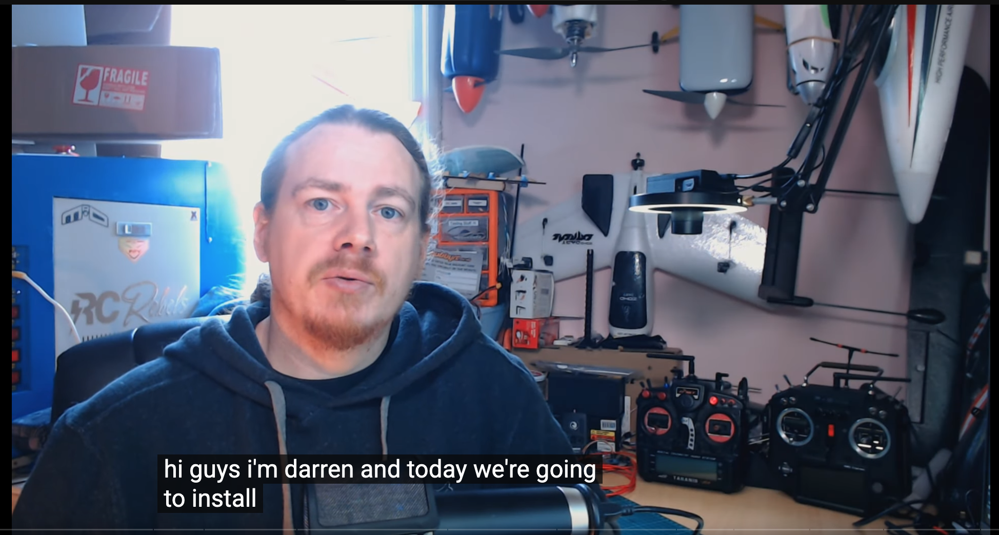

AI
CLASSIFICATION
CAR CLASSIFIER
Tag: #Edge Impulse, #Omniverse, #@DavidT
edge-impulse.gitbook.io | edge-impulse replicator

HARDWARE
FLIGHT CONTROLLERS
Betaflight
CLI
Force DFU Mode
Diff
tag: #diff, #dump, #Painless360
Ardupilot

PX4
VIDEO
Goggles
Josh Bardwell, Tutorial Build Using GogglesX
tags: #GogglesX.
Bardwell Tutorial Build Using Goggles X
ß
Vtx (Video Tx)
chu
SENSORS
ACCELEROMETER
GYRO
GPS & MAGNETOMETER (GNSS)
Vifly Gps Mate


GPS and Compass Setup
https://github.com/iNavFlight/inav/wiki/GPS-and-Compass-setup
From Sensei @ Inav
Oscar Liang:
GPS Rescue Mode in Betaflight.
Setup-gps-rescue-mode-betaflightHow To Optimize GPS Receiver Settings in U-Center To Get More Satellite Locks
gps-settings-u-center
COMPASS
COMPASS ALIGNMENT
Tags: #Painless360, Inav, Compass, FC, GPS Alignment
LIDAR

CAMERAS
Airborne remote sensing of wildland fires (PDF)
www.fs.usda.gov
FPV
RECORD3
IR-INFRARED
SWIR-SHORTWAVE IR
SAR - SYNTHETIC APERATURE RADAR